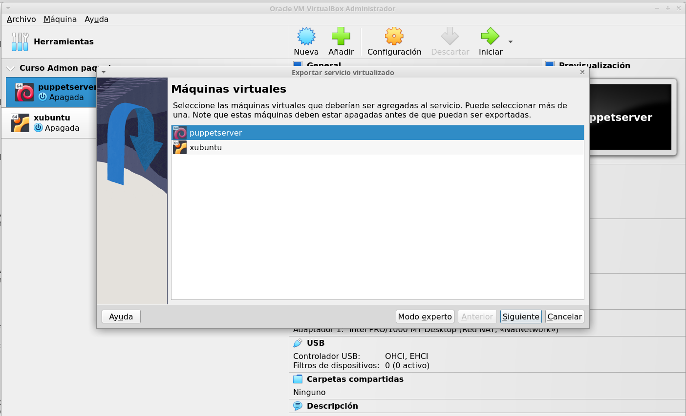
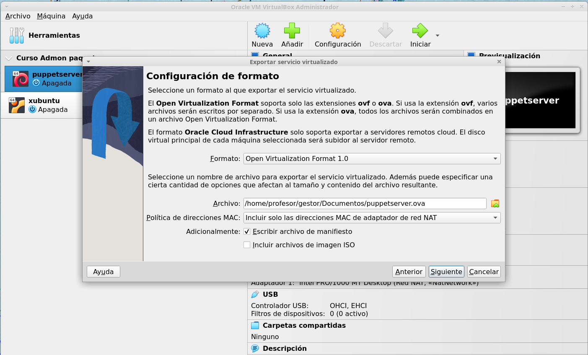
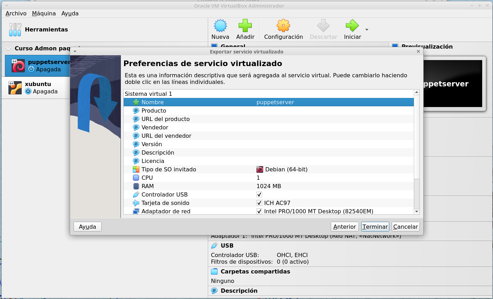

Procedimiento de exportación de una máquina virtual
Una vez que creamos una máquina virtual con unas determinadas características, software o servicios, puede interesarnos exportarla para disponer de un modelo para reutilizar.
El proceso de exportación de una máquina virtual es muy sencillo.
Lo primero que tenemos que hacer es hacer clic en el menú Archivo -> Exportar servicio virtualizado:

Nos aparecerá una ventana como la siguiente donde tenemos que seleccionar la máquina virtual que queremos exportar:

Una vez seleccionada la máquina virtual que queremos exportar, hacemos clic en el botón "Siguiente" y pasaremos a la siguiente ventana de configuración:

En esta ventana podemos seleccionar varias cosas:
- El formato de exportación.
- El nombre y la ubicación del archivo de exportación.
- Seleccionaremos qué direcciones MAC de las interfaces de red se deben incluir.
- Podemos seleccionar si queremos incluir el archivo de manifiesto. Este archivo verificará automáticamente la integridad de los datos y evitará la implementación de dispositivos dañados.
- Y también podemos incluir archivos de imagen ISO en la exportación.
Una vez seleccionadas las opciones, hacemos clic en el botón "Siguiente".
En la siguiente pantalla, rellenaremos la información descriptiva que queramos y que podremos ver a la hora de importar la máquina virtual:

Por último, haremos clic en el botón "Terminar" y comenzará el proceso de exportación.
En este caso, cuando termine, tendremos un archivo puppetserver.ova que nos servirá para importar nuestra máquina.